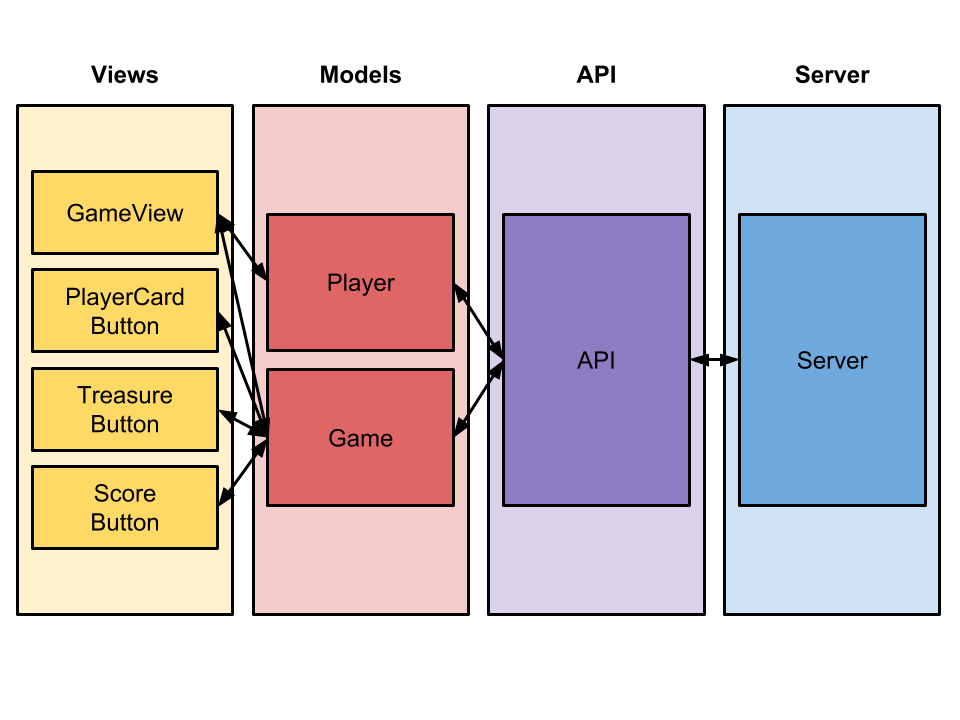

This code provides an example of an interface for the card game Treasure. This documentation is written in a style called 'literate programming,' where code is written primarily for other humans to read, and secondarily for computers to run. It's as much about communicating ideas as it is about making the computer do something. The source code for the program is on the right; comments describing what's going on is on the left. The documentation is written to be read in order (at the end of each page, there's a link to the next), but there are lots of links you can follow if you're curious.
This project is an example of an important kind of modularity: thinking in layers. Each layer takes care of some complexity and exposes a simpler interface to the layer above it. The Treasure client has four layers:

This documentation will guide you from the outside in, but you can skip to any layer if you want:
The code in this file is quite simple: it creates the objects we'll need and then kicks off the first render.
We will create six global objects--that means they're visible to every other part
of the program. Creating global variables is usually not good style, but this is a
small project and it makes things a bit simpler. Keep in mind, whenever other code
refers to player or game, it's referring to the objects below.
The Logger takes care of reporting messages. It's super useful for debugging, because you can have all the parts of your program report detailed DEBUG messages, and then turn them all off by changing the settings of your Logger. One of the patterns I've learned through hard experience is to always use a logger.
Logger log;The Dispatcher is responsible for coordinating communication at the View layer. Anybody can send the Dispatcher a message, and it will be communicated to all the Views. This is another useful design pattern you might consider adopting.
Dispatcher dispatcher;The GameView is the main view for the whole program. It takes care of creating the other views and responds to events they create.
GameView view;setup() runs only once, at the beginning of the program. We need to instantiate objects and assign them
to the variables we just created. Then we send a single Event to the dispatcher to get everything started.
void setup() {We make a MAIN log, which we can use to leave notes about the top-level state of the program. Currently,
it only gets used once. But try adding more log messages!
log = new Logger(INFO, "[MAIN]");We create the Player by providing a fixed player ID (pid), so you can only play as Voldemort. Sorry.
A fancier verison of this game could let the player log in as a different user.
player = new Player(41113);We create the dispatcher
dispatcher = new Dispatcher();and a game set to autoplay. This means the bot player will sign up and automatically play a card whenever
possible. It is much simpler to write an interface that only supports autoplay, because then you don't need
to wait for another player to join or check to see if she has played.
(Even if you wanted to write a multiplayer interface, autoplay
makes it easier to test your work in progress.
game = player.newAutoplayGame();Print a log message, just to maje sure the player loaded properly.
log.info("Playing as " + player.toString());Every Processing sketch needs to set the size of the window.
size(600, 400);and then send a "render" message.
dispatcher.notify(new Event("render"));
}Processing will call the draw() method over and over constantly. We are using a reactive style of programming,
where the screen only changes in response to user actions, so we don't need to do anything in draw(). (Turns out
it's still required, or Processing won't listen for mouse clicks and key presses.)
void draw() {
}Like setup() and draw(), mouseClicked() is a function that Processing will call at the appropriate time,
in this case every time the mouse is clicked. (This is part of the Processing interface.) We are going to use
Events for communication between different parts of the program, so all we need to do here is
create a new mouseClicked event and give it to the dispatcher. Then every part of the program that cares about
mouse clicks can respond appropriately. Using events, rathen than calling the other parts of the program
directly, helps make the code more modular. This part of the program doesn't need to know or care who will
be responding to events, and nothing here needs to change if we later add new components.
void mouseClicked() { Event event = new Event("mouseClicked");The dispatcher will take care of telling everyone else about the event.
dispatcher.notify(event);
}Similar to mouseClicked, keyPressed is called whenever a key is pressed. We will bind keypresses to events, meaning we'll send an event whenever certain keys are pressed. This would be easy to extend to detect other keys.
void keyPressed() {key is a variable which always stores the most recently pressed key. (See the Processing documentation.)
Coded keys are those that don't produce symbols like letters or numbers. The Processing documentation
suggests detecting coded keys by checking whether they're CODED and then checking whether they match
a certain key.
if (key == CODED && keyCode == LEFT) {
dispatcher.notify(new Event("focusLeft"));
}
else if (key == CODED && keyCode == RIGHT) {
dispatcher.notify(new Event("focusRight"));
}
else if (key == CODED && keyCode == UP) {
dispatcher.notify(new Event("selectFocused"));
}
}Take a moment to reflect on how little code there was in this file. That's the sign of a well-designed program: like a good manager, you don't have to do very much because you have effectively delegated the work to others. Now that we have finished gluing all the parts together, let's consider the first layer, the Views.